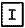
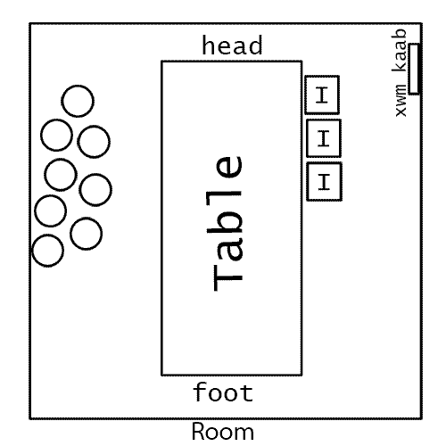
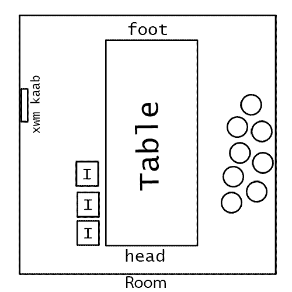
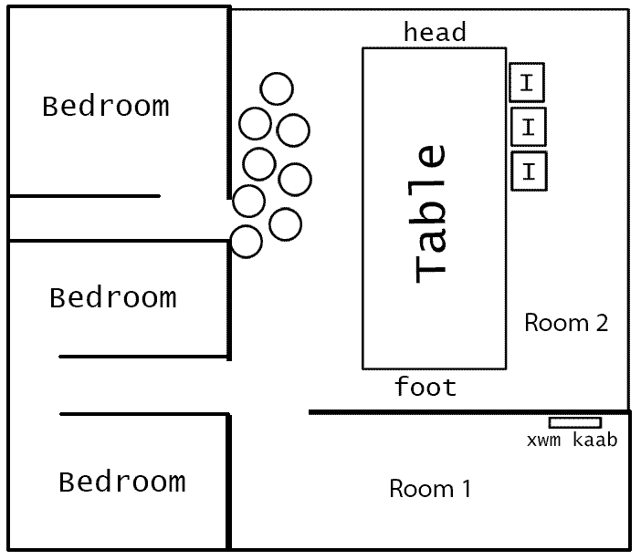

proper way to setup the table
In the olden days the table always starts at the cov txus today this is the fireplace and ends at the qhov cub today this is the kitchen. (see image of old home). If you are standing at the head of the table the xwm kaab is to your left side and all the people who played an important role in the event that day for example the txiv neeb sits on the left side of the table.
Since today's homes can be of any design, some homes don't even have a fireplace. Its more difficult to figure out how the table should be set up.
Here are some of the things to remember when setting up the table.
1. If you are standing at the head of the table the xwm kaab should be on your left side.
1. If you are standing at the head of the table the important people should be seated to your left.
2. The table should be set up where you bow (npe) towards the xwm kaab. The important people sitting at the table, their backs
should be toward the the xwm kaab.
Below are some examples :

This icon represents the important people at the event and their position at the table, example txiv neej, txiv mus etc..This icon represents family members, friends, etc.. and their position at the table
The image below shows the positions of the table and people right before thanking (ua tsaug) the shaman, important people etc..
Example 1 :This is the proper table setup if the Xwm Kaab is anywhere on the right wall

Example 2 :This is the proper table setup if the Xwm Kaab is anywhere on the left wall

Example 3 : Xwm Kaab is in another room, but you can only setup the table in the larger living room
